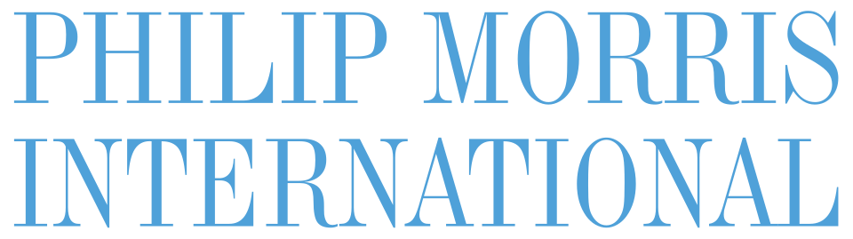

브랜드·비즈니스 브랜드 254
브랜드 평가, 컨설팅, 비즈니스 지표처럼 브랜드를 산업으로 다루는 항목을 모읍니다. 브랜드 아틀라스에 수록된 브랜드·비즈니스 브랜드 254개를 로고와 함께 모았습니다. 각 항목은 설립 배경, 브랜드 아이덴티티, 로고 변천, 제품과 서비스, 현재 상태를 정리한 상세 페이지로 이어집니다.
다른 산업 보기
기원 국가가 확인된 브랜드는 107개이며 한국 52개, 미국 21개, 일본 14개, 영국 8개, 독일 4개 순으로 많습니다. 설립연도가 확인된 브랜드는 127개이며 가장 오래된 곳은 1804년, 가장 최근은 2025년에 시작했습니다. 시기별로는 1900년 이전 13개, 1900~1949년 25개, 1950~1999년 56개, 2000년 이후 33개입니다. 수록 자료로는 로고 이미지 205개, 로고 변천 자료 3개, 연혁 타임라인 177개를 갖췄습니다. 이 가운데 68개는 공식 웹사이트가 일치하는 위키데이터 개체로 연결해 두었습니다.
브랜드·비즈니스 브랜드 목록
품질 점수 순 상위는 로고 타일로, 나머지는 가나다순 목록으로 보입니다.
 페덱스FedEx미국 · 1971년
페덱스FedEx미국 · 1971년페덱스(FedEx)는 미국 멤피스에 본사를 둔 글로벌 특송·물류 기업이다.
 던킨Dunkin'미국 · 1950년
던킨Dunkin'미국 · 1950년던킨(Dunkin')은 1950년 미국 매사추세츠주 퀀시에서 문을 연 커피·도넛 체인으로, 창업자 윌리엄 로젠버그가 1948년 시작한 '오픈…
 헨켈Henkel독일 · 1876년
헨켈Henkel독일 · 1876년헨켈(Henkel)은 1876년 독일에서 설립된 생활화학·접착기술 분야의 다국적 소비재 대기업이다.
 퍼스트 초이스First Choice영국
퍼스트 초이스First Choice영국퍼스트 초이스(First Choice)는 영국의 패키지 휴가 브랜드로, TUI 그룹에 속해 있다.
 마쓰다Mazda일본 · 1931년
마쓰다Mazda일본 · 1931년마쓰다(Mazda Motor Corporation)는 1920년 일본 히로시마에서 마쓰다 주지로가 설립한 도요 코르크 공업(Toyo Cork…
 교보생명Kyobo Life Insurance한국 · 1958년
교보생명Kyobo Life Insurance한국 · 1958년교보생명(Kyobo Life Insurance)은 1958년 대한교육보험으로 출발한 대한민국의 대형 생명보험회사다.
 NH투자증권NH Investment & Securities1969년
NH투자증권NH Investment & Securities1969년NH투자증권은 2014년 우리투자증권과 NH농협증권의 합병을 거쳐 2015년 1월 공식 출범한 종합증권사다.
 트립어드바이저Tripadvisor미국 · 2000년
트립어드바이저Tripadvisor미국 · 2000년트립어드바이저(Tripadvisor)는 전 세계 여행자가 직접 남긴 후기를 모아 숙소·음식점·관광지·체험을 비교하고 예약하도록 돕는 미국의…
 피어스페이스Peerspace미국
피어스페이스Peerspace미국피어스페이스는 미국에서 출발한 시간 단위 공간 대여 마켓플레이스로, 이벤트·회의·촬영·파티 등 목적에 맞는 독특한 공간을 시간당 단위로 예약할…
 메리츠화재Meritz Fire & Marine Insurance한국 · 1922년
메리츠화재Meritz Fire & Marine Insurance한국 · 1922년메리츠화재(Meritz Fire & Marine Insurance)는 1922년 조선화재해상보험으로 출발한 대한민국의 손해보험회사다.
 더 하트퍼드The Hartford미국 · 1810년
더 하트퍼드The Hartford미국 · 1810년더 하트퍼드는 1810년 미국 코네티컷주 하트퍼드에서 설립된 미국의 대표적 보험·금융 기업이다.
 도요타Toyota일본 · 1937년
도요타Toyota일본 · 1937년도요타는 1937년 일본에서 설립된 자동차 제조사로, 코롤라·캠리·프리우스를 비롯한 광범위한 차종과 렉서스 럭셔리 브랜드를 운영하며 연간…
 몬트리올 1976은 캐나다 디자이너 조르주 휴엘Montreal 1976
몬트리올 1976은 캐나다 디자이너 조르주 휴엘Montreal 1976몬트리올 1976은 캐나다 디자이너 조르주 휴엘(Georges Huel)이 그래픽·디자인 총괄로 완성한 1976년 몬트리올 하계올림픽(제21회…
 바이트 백Bite Back
바이트 백Bite Back바이트 백(Bite Back, Bite Back 2030)은 영국의 청소년 주도 식품·건강 캠페인 운동이다.
 샌프란시스코 심포니San Francisco Symphony
샌프란시스코 심포니San Francisco Symphony샌프란시스코 심포니(San Francisco Symphony)는 1911년 창단된 미국 캘리포니아주 샌프란시스코의 오케스트라로, 데이비스…
 왕립동물학대방지협회RSPCA영국 · 1824년
왕립동물학대방지협회RSPCA영국 · 1824년왕립동물학대방지협회(RSPCA)는 1824년 영국 런던에서 설립된 세계 최초이자 가장 오래된 전국 단위 동물복지 자선단체다.
 웨스팅하우스 일렉트릭Westinghouse미국 · 1886년
웨스팅하우스 일렉트릭Westinghouse미국 · 1886년웨스팅하우스 일렉트릭은 1886년 조지 웨스팅하우스가 설립한 미국의 전기·산업 제조 기업으로, 본사는 펜실베이니아주 피츠버그에 두었다.
 트위치Twitch
트위치Twitch트위치(Twitch)는 아마존 산하의 실시간 게임 스트리밍 플랫폼으로, 게이머가 자신의 플레이를 생중계하고 시청자가 채팅으로 실시간 반응하는…
 레바라Lebara2001년
레바라Lebara2001년레바라(Lebara)는 2001년 설립된 영국 런던 기반 이동통신 사업자로, 자체 통신망 없이 보다폰 등 기존 통신사의 망을 빌려 운영하는…
 뮤즈 그룹Muse Group
뮤즈 그룹Muse Group뮤즈 그룹은 전 세계 4억 명 이상이 쓰는 음악 소프트웨어 기업으로, 기타 코드·악보 서비스 얼티밋 기타, 악보 작성 도구 뮤즈스코어, 오디오…
 블랭크 스트리트 커피Blank Street Coffee미국 · 2020년
블랭크 스트리트 커피Blank Street Coffee미국 · 2020년블랭크 스트리트 커피는 2020년 미국 뉴욕 브루클린에서 출발한 소형 점포 중심의 테크 기반 커피 체인이다.
 샌달스 리조트Sandals
샌달스 리조트Sandals샌달스 리조트(Sandals Resorts)는 1981년 자메이카 출신 기업가 고든 '부치' 스튜어트가 몽고베이의 해변 호텔을 인수해 개장하며…
 스텔라 아르투아Stella Artois
스텔라 아르투아Stella Artois스텔라 아르투아는 벨기에 뢰번(Leuven)에 뿌리를 둔 필스너 라거로, 그 양조 전통은 뢰번의 덴 호른(Den Hoorn) 양조장으로 거슬러…
 아식스ASICS일본 · 1977년
아식스ASICS일본 · 1977년아식스(ASICS)는 오니츠카 타이거 등 세 회사의 대등한 합병으로 1977년 설립된 일본의 종합 스포츠용품 기업이다.
 올리베티Olivetti1908년
올리베티Olivetti1908년올리베티(Olivetti)는 1908년 카밀로 올리베티가 이탈리아 이브레아(Ivrea)에서 설립한 타자기 제조사로 출발해 20세기를 대표하는…
 올림피쿠스Olympikus브라질 · 1975년
올림피쿠스Olympikus브라질 · 1975년올림피쿠스(Olympikus)는 1975년 설립된 브라질의 스포츠 신발 브랜드로, 브라질 신발 제조사 불카브라스(Vulcabras)가 보유하고…
 인스타카트Instacart2012년
인스타카트Instacart2012년인스타카트(Instacart)는 2012년 설립된 북미 식료품 배송·기술 기업으로, 사용자가 주문한 상품을 제휴 매장에서 대신 구매해 배달한다.
 일렉트로닉 아츠Electronic Arts미국 · 1982년
일렉트로닉 아츠Electronic Arts미국 · 1982년일렉트로닉 아츠(EA)는 1982년 설립된 미국의 비디오 게임 기업으로, 캘리포니아 레드우드시티에 본사를 둔다.
 뉴욕 시티 FCNew York City FC
뉴욕 시티 FCNew York City FC뉴욕 시티 FC(NYCFC)는 미국 프로축구 리그 메이저 리그 사커(MLS)에 속한 뉴욕 연고 구단으로, 2013년 창단해 2015시즌부터…
 런던 신포니에타London Sinfonietta
런던 신포니에타London Sinfonietta런던 신포니에타는 1968년 출범한 영국의 대표적인 현대·동시대 음악 전문 체임버 오케스트라다.
 미스핏츠 헬스Misfits2017년
미스핏츠 헬스Misfits2017년미스핏츠 헬스는 영국에 기반을 둔 식물성 단백질 식품 브랜드다.
 미쓰비시 자동차Mitsubishi Motors1970년
미쓰비시 자동차Mitsubishi Motors1970년미쓰비시 자동차(Mitsubishi Motors Corporation, MMC)는 일본을 대표하는 자동차 제조사로, 세 개의 빨간 마름모를…
 베네세Benesse일본 · 1955년
베네세Benesse일본 · 1955년베네세(Benesse)는 일본의 교육·출판 기업이다.
 삿포로 1972Sapporo 1972
삿포로 1972Sapporo 1972삿포로 1972(Sapporo '72)는 홋카이도에서 열린 아시아 최초의 동계올림픽인 1972년 삿포로 동계올림픽의 브랜드다.
 세븐업7up미국
세븐업7up미국세븐업은 미국에서 탄생한 레몬라임 향 무카페인 탄산음료로, 맑고 투명한 액체와 청량한 산미가 특징이다.
 스니커즈Snickers1930년
스니커즈Snickers1930년스니커즈(Snickers)는 미국 제과 기업 마스(Mars)가 1930년 출시한 초콜릿 바로, 누가·캐러멜·구운 땅콩을 밀크초콜릿으로 감싼…
 예거마이스터Jägermeister
예거마이스터Jägermeister예거마이스터는 독일 볼펜뷔텔에서 만들어지는 56종의 허브·과일·뿌리·향신료를 침출·숙성해 빚는 알코올 도수 35%의 다크 허브 리큐어다.
 오바마 재단Obama Foundation2014년
오바마 재단Obama Foundation2014년오바마 재단(The Obama Foundation)은 버락 오바마와 미셸 오바마가 2014년 설립한 비영리 기관으로, 리더십 양성과 지역사회…
 옴렛Omlet영국 · 2004년
옴렛Omlet영국 · 2004년옴렛(Omlet)은 2004년 영국에서 설립된 반려동물·도시 양계 디자인 제품 회사로, 모던 플라스틱 닭장 '에글루(Eglu)'로 가장 잘…
 쿤스트할레 바젤Kunsthalle Basel1839년
쿤스트할레 바젤Kunsthalle Basel1839년쿤스트할레 바젤은 1839년 설립된 바젤 미술협회를 모태로 1872년 문을 연 스위스에서 가장 오래되고 활발한 동시대 미술 전시 기관이다.
 피자익스프레스Pizza Express영국 · 1965년
피자익스프레스Pizza Express영국 · 1965년피자익스프레스는 1965년 영국 런던 소호에서 시작된 캐주얼 다이닝 피자 레스토랑 체인이다.
 고려아연Korea Zinc한국 · 1974년
고려아연Korea Zinc한국 · 1974년고려아연(Korea Zinc)은 아연·납 등 비철금속을 제련·생산하는 세계 1위급 비철금속 제련 기업이다.
 레딧Reddit
레딧Reddit레딧은 2005년 미국에서 출범한 소셜 뉴스·커뮤니티 플랫폼으로, 등록 이용자가 링크·텍스트·이미지·영상을 올리면 다른 이용자가…
 아사히Asahi일본 · 1986년
아사히Asahi일본 · 1986년아사히(Asahi)는 일본의 대표적 맥주·음료 기업이다.
 엠아이티 미디어랩MIT Media Lab1985년
엠아이티 미디어랩MIT Media Lab1985년엠아이티 미디어랩은 1985년 니컬러스 네그로폰테와 전 엠아이티 총장 제롬 위즈너가 공동 설립한 융합 연구 기관이다.
 체스터 동물원Chester Zoo1931년
체스터 동물원Chester Zoo1931년체스터 동물원(Chester Zoo)은 1931년 모터스헤드 가문이 설립한 영국의 동물원으로, 1934년 등록 자선단체 체제로 운영되기…
 클리넥스Kleenex1924년
클리넥스Kleenex1924년클리넥스(Kleenex)는 1924년 출시된 킴벌리클라크(Kimberly-Clark)의 미용 티슈 브랜드로, 일회용 페이셜 티슈 카테고리를…
 핀란드 헬싱키 시Helsinki2017년
핀란드 헬싱키 시Helsinki2017년핀란드 헬싱키 시는 2017년 도시 전체를 아우르는 통합 비주얼 아이덴티티를 새로 도입한다.
전체 목록

필립 모리스 인터내셔널 Philip Morris International필립 모리스 인터내셔널(Philip Morris International)은 스위스 로잔에 본부를 두고 세계 여러 지역에서 담배 브랜드를 생산·판매하는 미국…